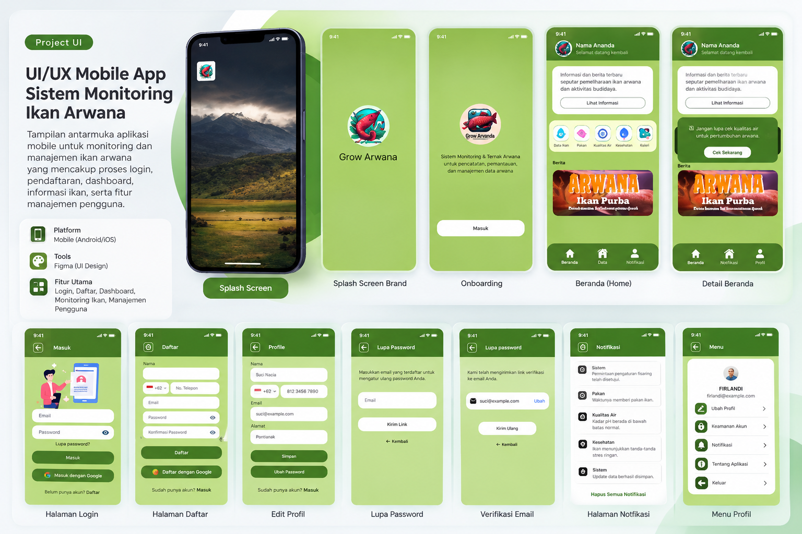
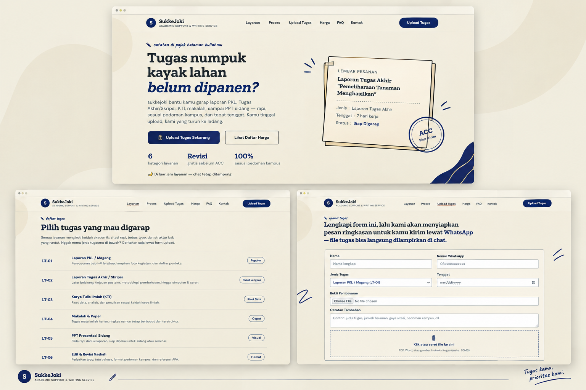

arrow_back Back to Home
Semua Project
Kumpulan arsip proyek, desain, dan pengembangan sistem yang pernah saya kerjakan.

UI Website Design — Sistem Monitoring Ikan Arwana
Perancangan UI/UX aplikasi mobile untuk membantu pengguna memantau pertumbuhan, kesehatan, dan perawatan ikan arwana melalui tampilan yang modern, intuitif, dan mudah digunakan.
Photoshop
Canva
Figma

SukkeJoki — Academic Support & Writing Service
SukkeJoki merupakan konsep website layanan bantuan akademik yang dirancang untuk memudahkan mahasiswa dalam menemukan layanan, memahami detail paket, dan mengirimkan kebutuhan tugas melalui satu platform. Dengan pendekatan desain yang clean, editorial, dan user-friendly, website ini menggabungkan nuansa warna cream dan navy untuk menciptakan tampilan yang profesional, nyaman dibaca, dan mudah digunakan.
Photoshop
Canva
Figma